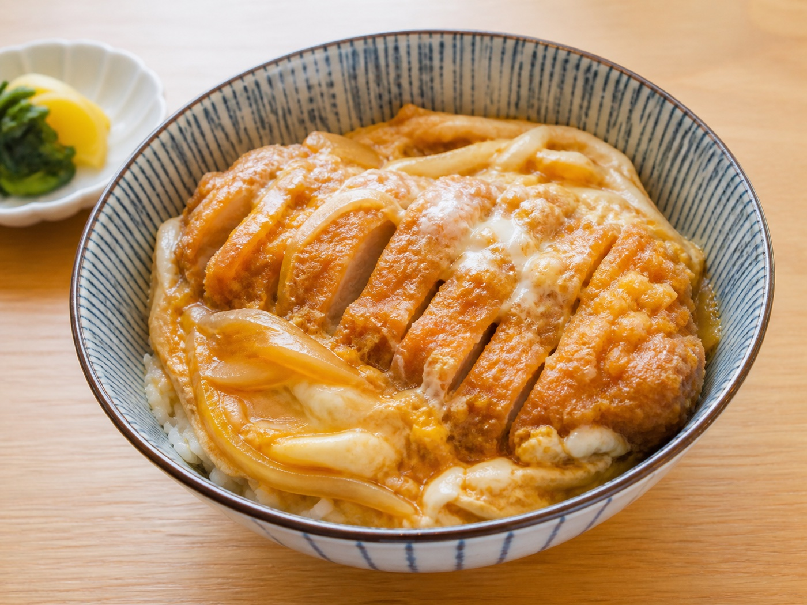
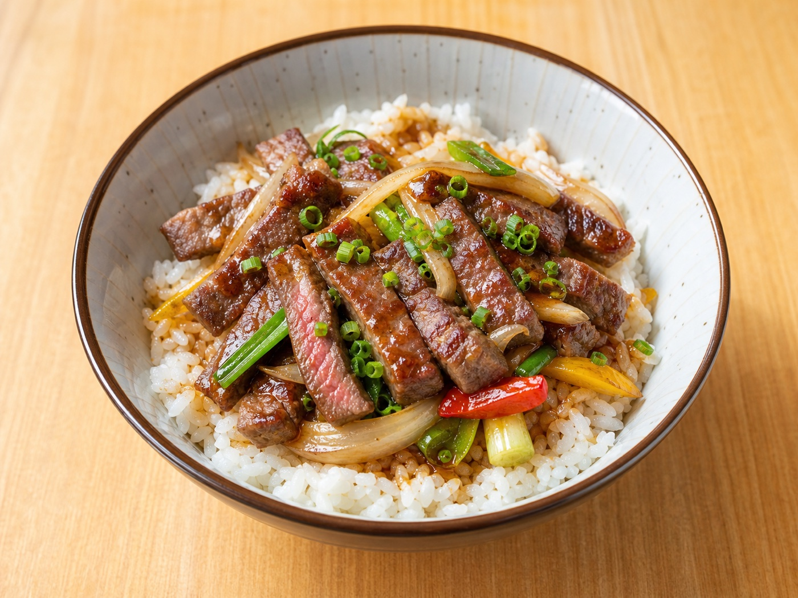
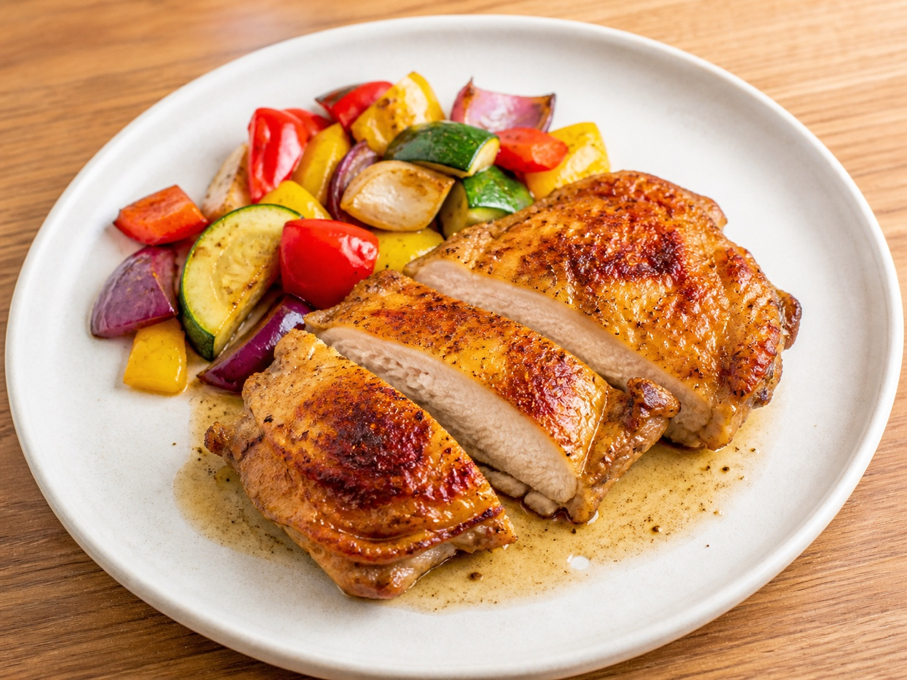
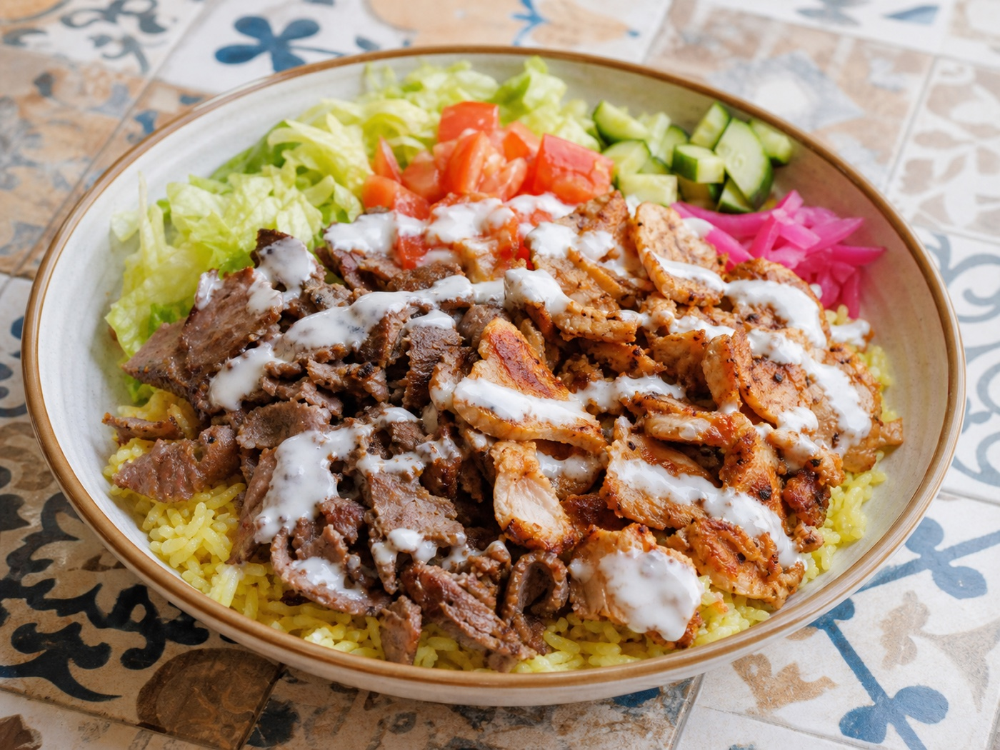
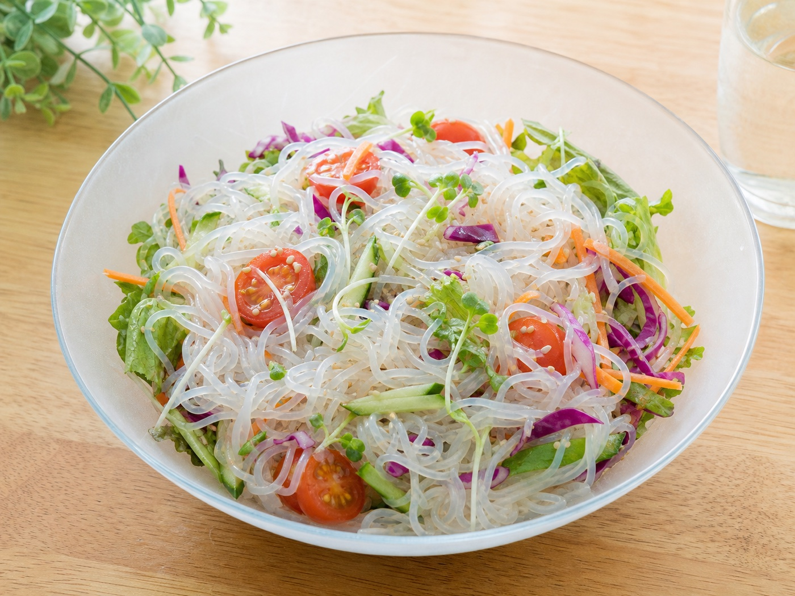
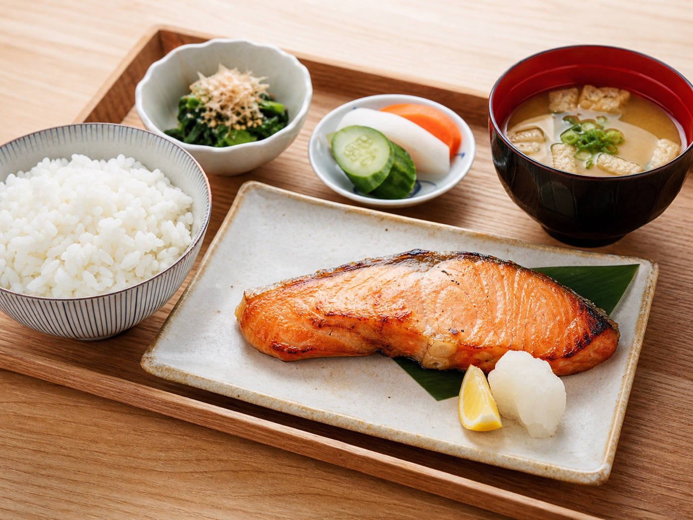
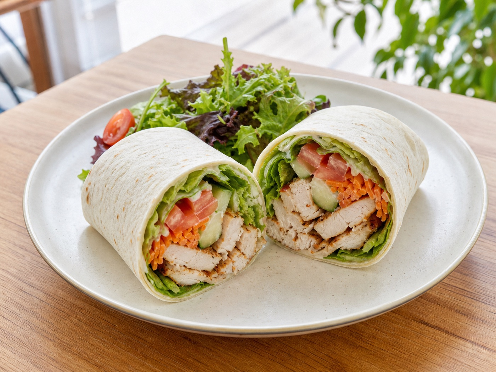
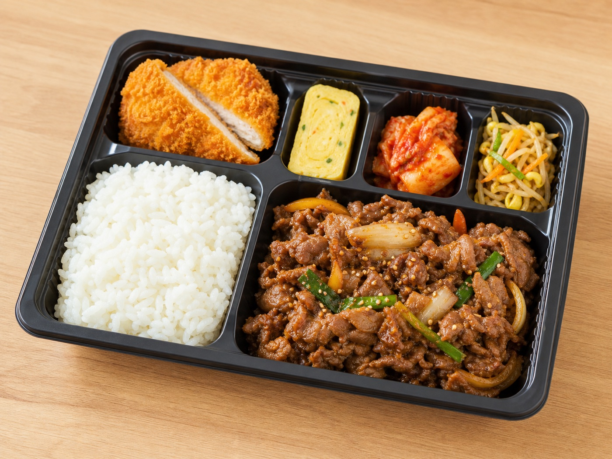
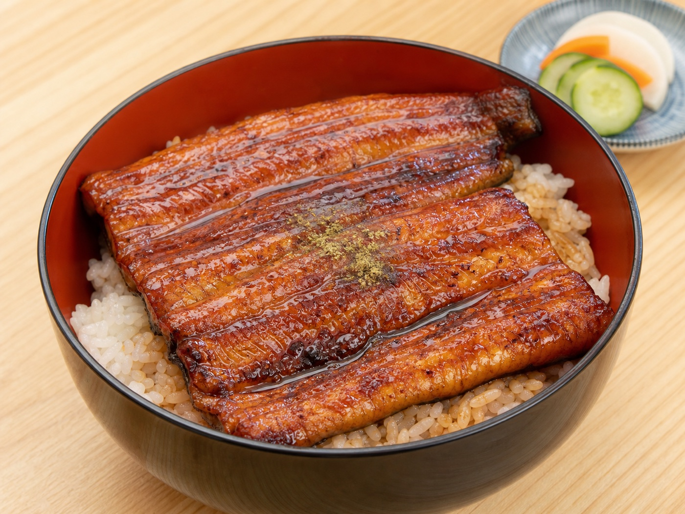

1가츠동
jp-004 · 밥 위에 달걀과 양파로 조린 돈카츠가 분명하게 보이는 가츠동 사진
메뉴명, 핵심 구성, 음식 중심 구도, 식욕도를 최종 확인합니다.

1jp-004 · 밥 위에 달걀과 양파로 조린 돈카츠가 분명하게 보이는 가츠동 사진

2ws-006 · 밥 위에 먹기 좋게 썬 스테이크와 채소가 올라간 덮밥 사진

3ws-008 · 완전히 익은 닭고기 속살과 노릇한 껍질이 분명한 치킨스테이크 사진

4as-012 · 밥과 구운 케밥 고기, 채소, 흰 소스 구성이 풍성하게 보이는 사진

5hl-009 · 투명한 곤약면과 다채로운 채소가 선명하게 구분되는 샐러드 사진

6jp-017 · 연어구이와 밥, 미소국, 반찬이 밝고 정갈하게 보이는 정식 사진

7hl-016 · 닭고기와 채소가 가득한 랩 단면이 선명하게 보이는 사진

8top-025 · 밥과 고기 반찬, 튀김, 달걀, 김치가 칸별로 담긴 따뜻한 도시락 사진

9top-030 · 윤기와 구운 결이 살아 있는 장어가 밥 위를 가득 덮은 밝은 사진